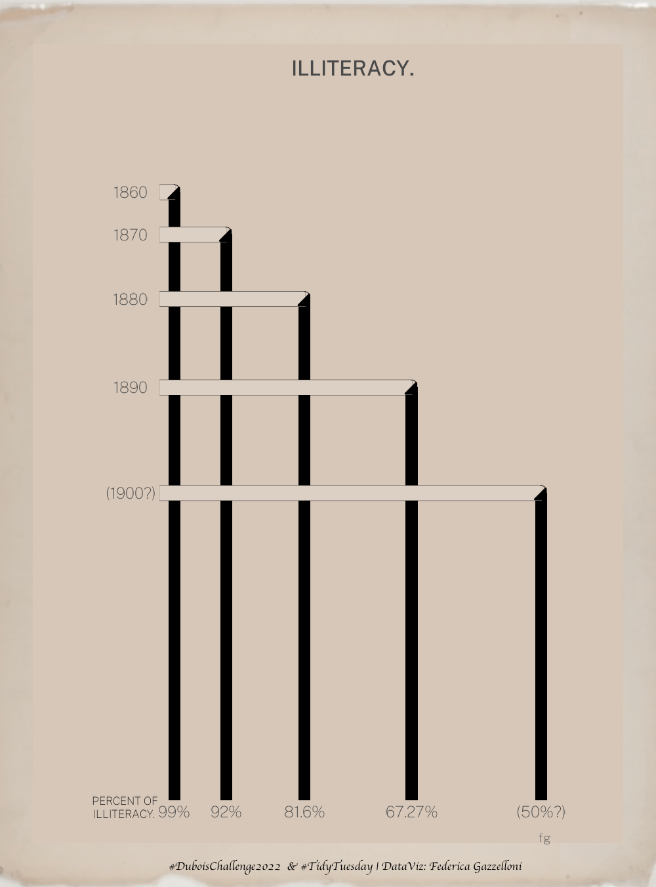

DuBois Challenge 2022
By Federica Gazzelloni
February 21, 2022
Overview
This week is all about #DuBoisChallenge2022, I choose plate number 6.
library(tidyverse)

Load #TidyTuesday 2022/07 data
plate6 <- read_csv('https://raw.githubusercontent.com/ajstarks/dubois-data-portraits/master/challenge/2022/challenge06/data.csv')
Add a column with distances
df <- plate6 %>%
janitor::clean_names() %>%
mutate(x_axis=c(1860,1860-cumsum(diff(iliteracy_rate))))
df
Create axis lables vectors
iliteracy_rate<-df$iliteracy_rate
x_axis <-df$x_axis
Fonts
library(showtext)
font_add(family = "Public Sans Thin",
regular = "PublicSans-Thin.ttf")
font_add(family = "PublicSans-Medium",
regular = "PublicSans-Medium.ttf")
showtext_auto()
Make the plot
library(ggstar) # for making the triangles
number6 <- df %>%
ggplot(aes(x = x_axis, y = iliteracy_rate))+
# add the columns
geom_col(width = 1.5,fill="black") +
# this is one way to add the horizontal lines
geom_segment(aes(x = 1858, xend = x_axis+0.1,
y = iliteracy_rate, yend = iliteracy_rate),
size = 2.5, color = "black") +
geom_segment(aes(x = 1858, xend = x_axis+0.1,
y = iliteracy_rate, yend = iliteracy_rate),
size = 2.4, color = "#d9ccbf")+
# with ggstar add the triangular shape
geom_star(starshape = 20, size = 0.8,angle = 90, fill = "black",
position = position_nudge(x = -0.1, y = -0.15)) +
# add the little round corners
geom_curve(aes(x = x_axis - 0.1, xend = x_axis + 0.65,
y = iliteracy_rate + 1.2, yend = iliteracy_rate),
curvature = -0.6, size = 0.1) +
# customize the axis values
scale_x_continuous(breaks = x_axis,
labels = c("99%","92%","81.6%","67.27%","(50%?)"),
expand = expansion(0.01)) +
scale_y_continuous(breaks = iliteracy_rate,
labels = c(1860,1870,1880,1890,"(1900?)"),
expand = expansion(0.01)) +
# add a title and a theme
labs(title = "ILLITERACY.\n", subtitle = " ", caption = "fg")+
theme_void()+
theme(text = element_text(size = 18, family = "Public Sans Thin", color = "grey25"),
plot.title = element_text(size = 24, family = "PublicSans-Medium",face = "bold", hjust = 0.5),
plot.background = element_rect(fill = "#d2c2b3", color = "#d2c2b3"),
panel.background = element_rect(fill = "#d2c2b3",color = "#d2c2b3"),
axis.text.x = element_text(),
axis.text.y = element_text(),
plot.margin = margin(0,25,0,25))
Assemble background, plot and annotation
With {cowplot} add a background image as the same as the original one and the text on the left side of the x-axis
Save the plot
ggsave("w7_Number6.png", width = 1000, height = 1350,
units = "px", dpi = 320)
- Posted on:
- February 21, 2022
- Length:
- 2 minute read, 326 words
- See Also: